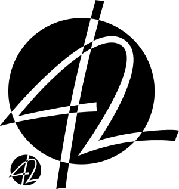

20 décembre 2010
Nom de domaine en .42
42registry.org propose depuis quelque temps l'enregistrement de nom de domaines en .42
Ce domaine TLD vise principalement le monde du libre, scientifique et des technologies en excluant l'aspect industriel.

Nous tenons à réunir sous le TLD .42 non seulement les libristes, mais plus globalement tout ce qui a trait aux domaines scientifiques, en excluant l'aspect industriel. Projets de recherche, logiciels libres, sites communautaires scientifiques, nouvelles technologies : ce sont les sujets que nous voulons retrouver derrière chaque domaine en .42. L'objectif étant qu'un utilisateur visitant un site muni de ce TLD ait la garantie de trouver un contenu constructif.L'enregistrement d'un domaine est gratuit et peut être financé par des donations. Une fois votre nom de domaine enregistré et paramétré voici un petit tutoriel pour pouvoir y accéder sur votre ordinateur. (Tutoriel pour Ubuntu/Debian) Edit : une manière plus simple consiste à ajouter les DNS dans sa configuration : Il suffit d’éditer le fichier /etc/dhcp3/dhclient.conf et d’y ajouter la ligne :
prepend domain-name-servers 81.93.248.69, 81.93.248.68, 91.194.60.196, 193.17.192.53;
Il sera nécessaire enfin de redémarrer le PC ou de simplement couper/relancer la connexion. --Matthour
- Installez bind :
sudo apt-get install bind9 - Éditez le fichier de configuration :
sudo vi /etc/bind/named.conf - Ajoutez à la fin :
zone "42" IN { type forward; forwarders {91.191.147.246; 91.191.147.243;}; }; - Éditez le fichier de configuration :
sudo vi /etc/resolv.conf - Remplacez l'adresse IP par celle du localhost 127.0.0.1
- Redémarrez Bind9 :
sudo /etc/init.d/bind9 restart - Ça marche ! Vous avez désormais accès au nom de domaines en .42
Commentaires 3